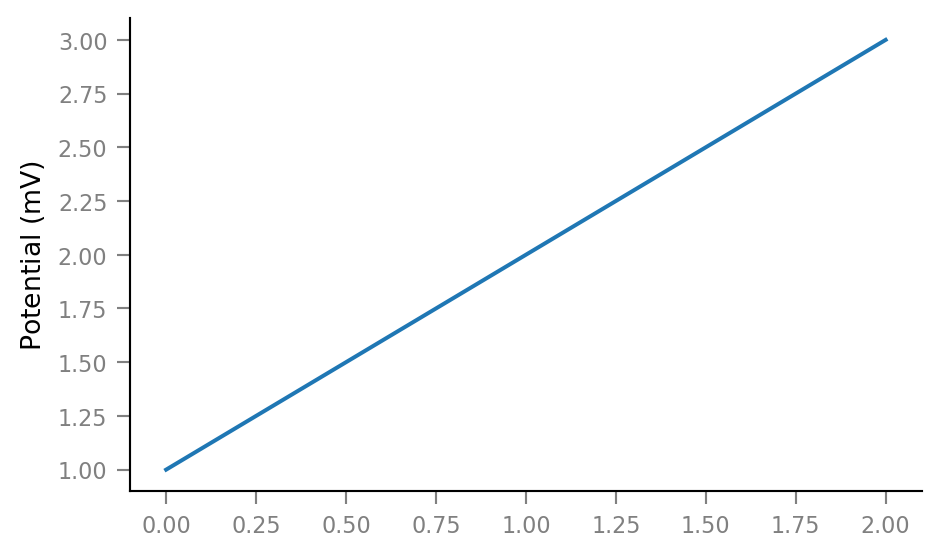
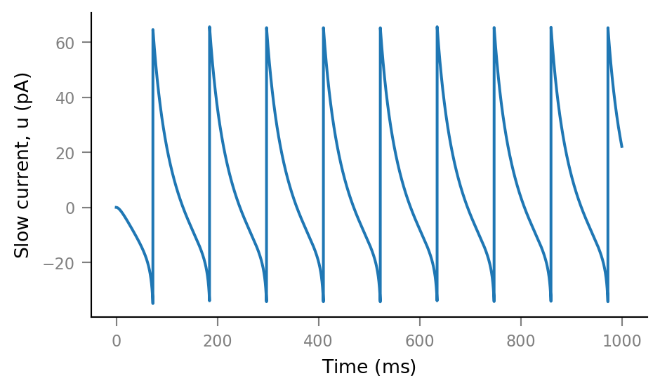

2020-07-28 • Storing values in base units¶
..but specifying and displaying them in physiological / most natural units
unyt.convert_to_base() is slow. So we don’t want to call this in our processing functions.
Solution: store all units in base units throughout calculation, and only do conversion at user interaction time. That is, when:
defining parameters
printing values
plotting
This notebook prototypes this solution.
(Alternative solutions we don’t explore here:
use Brian, which has its own unit system builtin.
program in Julia
).
Prototyping¶
%run init.ipynb
class Array(unyt_array):
def __new__(cls, *args, **kwargs):
obj = super().__new__(cls, *args, **kwargs)
obj.display_units = obj.units
if not obj.units.is_dimensionless:
obj = obj.astype('float64')
obj.convert_to_base('mks')
return obj
def __array_finalize__(self, obj):
super().__array_finalize__(obj)
self.display_units = getattr(obj, "display_units", None)
@property
def in_display_units(self):
if self.units.is_dimensionless:
return unyt_array(self)
else:
# Note that we can't return `self.to(self.display_units)` here, as that
# would convert to base units again (in __new__).
return unyt_array(self).to(self.display_units)
def __repr__(self):
clsname = self.__class__.__name__
if self.units.is_dimensionless:
return f"{clsname}({str(self)}, {self.dtype})"
else:
return f"{clsname}({str(self)}, stored in {self.units}, {self.dtype})"
def __str__(self):
if self.units.is_dimensionless:
return f"{self.value} (dimensionless)"
else:
return str(self.in_display_units)
class Quantity(Array, unyt_quantity):
...
a = Array([1.0,2,3], mV, name="Potential")
q = Quantity(1, mV/mV)
q
Quantity(1 (dimensionless), int32)
print(q)
1 (dimensionless)
a
Array([1 2 3] mV, stored in V, float64)
print(a)
[1 2 3] mV
from unyt.mpl_interface import unyt_arrayConverter
from matplotlib.units import registry, ConversionInterface
class MyConversionInterface(unyt_arrayConverter):
def __new__(cls):
return super(ConversionInterface, cls).__new__(cls)
@staticmethod
def default_units(x: Array, axis):
unyt_arrayConverter().default_units(x, axis)
return x.display_units
@staticmethod
def convert(value: Array, unit, axis):
return unyt_arrayConverter().convert(
value.in_display_units, unit, axis=axis)
registry[Array] = MyConversionInterface()
plt.plot(a);

plt.plot(a, yunits=V);

class Unit(unyt.Unit):
def __mul__(self, other):
obj = super().__mul__(other)
if isinstance(obj, unyt_quantity):
return Array(obj)
elif isinstance(obj, unyt_array):
return Quantity(obj)
else:
return obj
mV = Unit('mV')
a = 4 * mV
a
Array(4.0 mV, stored in V, float64)
a.ndarray_view() == a.ndview == a.d
True
a.ndview
array(0.004)
It all works nicely :)
I will now integrate this code in the codebase.
New codebase test¶
%run init.ipynb
Importing np, mpl, plt … ✔
Importing unyt … ✔
Importing code package (voltage_to_wiring_sim), as `v` … ✔
Imported * from v.units
v.neuron_sim.test()
Simulations with and without units yield equal results.
print(tg)
TimeGrid
--------
T = 1000.0 ms
dt = 0.1 ms
N = 10000
t = [0 0.1 0.2 ... 999.7 999.8 999.9] ms
sim = izh_neuron(tg, RS, I_e=np.ones(tg.N) * 80 * pA)
print(sim)
SimResult
---------
V_m = [-60 -59.92 -59.84 ... -53.76 -53.75 -53.74] mV
u = [0 0 -0.00048 ... 10 9.933 9.866] pA
I_syn = [-0 -0 -0 ... -0 -0 -0] pA
sim.V_m[:3]
Array([-60 -59.92 -59.84] mV, stored in V, float64)
sim.V_m.value[:3]
array([-0.06, -0.05992, -0.05984])
üëç
plt.plot(tg.t, sim.V_m);

plt.plot(tg.t, sim.u);
v.presynaptic_spike_train.show()

%%time
sts = v.presynaptic_spike_train.generate_spike_trains(500)
Wall time: 78.8 ms
%%time
sim = izh_neuron(
v.time_grid.TimeGrid(10*min, dt=0.1*ms),
params=RS,
I_e=np.ones(tg.N) * 80 * pA
)
Wall time: 682 ms